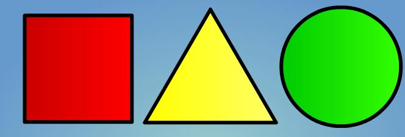

Imágenes
| Etiqueta |
<img /> |
| Atributos comunes |
Básicos, internacionalización y eventos |
| Atributos propios |
src = "url": Indica la URL de la imagen que se muestra.
alt = "texto": Descripción corta de la imagen.
height = "unidad_de_medida": Indica la altura con la que se debe mostrar la imagen (no es obligatorio que coincida con la altura original de la imagen).
width = "unidad_de_medida": Indica la anchura con la que se debe mostrar la imagen (no es obligatorio que coincida con la anchura original de la imagen).
usemap = "#nombre": Si una imagen utiliza un mapa de imagen, debe indicarlo mediante este atributo. El valor del atributo debe ser el name del mapa de imagen definido en otra parte del mismo documento HTML. Ver siguiente apartado para visualizar ejemplo.
|
| Tipo de elemento |
En línea y etiqueta vacía |
| Descripción |
Se emplea para incluir imágenes en los documentos |
Ejemplos:
Imagen con unidades de medida por defecto
Etiquetar una imagen sin indicar las medidas en width o height, utiliza sus medidas originales en pixeles. Las medidas en pixeles son fijas. Esto quiere decir que independientemente del tamaño del dispositivo donde se visualizará la imagen, siempre ocupará el mismo número de píxeles.

Código
<img src="../images/logo.png" alt="Documentación DAW logo">
Imagen con unidades de medida en píxeles
Las medidas en pixeles son fijas. Esto quiere decir que independientemente del tamaño del dispositivo donde se visualizará la imagen, siempre ocupará el mismo número de píxeles. Si se utiliza sólo una de los atributos width o height, el otro atributo tendrá el tamaño proporcional. Sin embargo, si se especifican los dos atributos, habría que tener cuidado para dar valores que no deformasen la imagen:
Código
<img src="../images/logo.png" alt="Documentación DAW logo">
Imagen con unidades de medida en '%'
Las medidas en '%' son dinámicas. Esto quiere decir que el tamaño de la imagen dependerá del dispositivo donde se visualizará la imagen, ocupará la proporción del tamaño del contenedor en el que esté encapsulada la imagen. Por ejemplo, en este caso, las imágenes de ejemplo están encapsuladas en una tabla que ocupa el 80% del 90% (100% - 5% x 2 de los margenes izquierdo y derecho) del ancho del sitio web al completo, y estas imágenes, ocupan un 50% de ese 80% del 90%. Fácil, ¿verdad? Aunque parezca mentira, te habituarás a esto. Prueba a modificar el tamaño de la ventana para ver el efecto dinámico.

Código
<img width="50%" src="../images/inspiracion_encabezado.png" alt="Inspiración del encabezado del sitio web"><img
<img width="50%" src="../images/encabezado.png" alt="Encabezado del sitio web"><img
|

|
Mapa de imágenes
| Etiqueta |
<map></map> |
| Atributos comunes |
Básicos, internacionalización y eventos |
| Atributos propios |
name = "texto": Nombre que identifica de forma única al mapa definido (es obligatorio indicar un nombre único)
|
| Tipo de elemento |
Bloque y en línea |
| Descripción |
Se emplea para definir mapas de imagen |
| Etiqueta |
<area></area> |
| Atributos comunes |
Básicos, internacionalización, eventos y foco |
| Atributos propios |
name = "texto": Nombre que identifica de forma única al mapa definido (es obligatorio indicar un nombre único). Ver atributo usemap de la etiqueta <img />.
nohref = "nohref": Nombre que identifica de forma única al mapa definido (es obligatorio indicar un nombre único)
shape = "rect | circle | poly | default": Indica el tipo de área que se define (rectangular, circular, poligonal o parte de la imagen no seleccionada con el área que acupen los anteriores).
coords = "lista de números": Se trata de una lista de números separados por comas que representan las coordenadas del área. Rectangular = X1,Y1,X2,Y2 (coordenadas X e Y del vértice superior izquierdo y coordenadas X e Y del vértice inferior derecho). Circular = X1,Y1,R (coordenadas X e Y del centro y radio del círculo). Poligonal = X1,Y1,X2,Y2,...,XnYn (coordenadas de los vértices del polígono. Si las últimas coordenadas no son iguales que las primeras, se cierra automáticamente el polígono uniendo ambos vértices)
|
| Tipo de elemento |
Etiqueta vacía |
| Descripción |
Se emplea para definir las distintas áreas que forman un mapa de imagen |
Ejemplo:
Visualización

Código
<img src="../images/figuras_geometricas.jpg" alt="Tres figuras geométricas. Un cuadrado, un triángulo y un círculo." usemap="#figuras">
<map>
<area shape="rect" coords="40,25,215,200" href="http://es.wikipedia.org/wiki/Cuadrado">
<area shape="circle" coords="560,110,100" href="http://es.wikipedia.org/wiki/C%C3%ADrculo">
<area shape="polygon" coords="345,20,238,200,450,200" href="http://es.wikipedia.org/wiki/Tri%C3%A1ngulo">
<area shape="default" nohref="nohref">
</map>
|
|
|
|